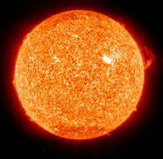

Astros
Sol
O Sol, nossa fonte de luz e de vida, é a estrela mais próxima de nós e a que melhor conhecemos. Basicamente, é uma enorme esfera de gás incandescente, em cujo núcleo acontece a geração de energia através de reações termonucleares. O estudo do Sol serve de base para o conhecimento das outras estrelas, que de tão distantes aparecem para nós como meros pontos de luz.
Apesar de parecer tão grande e brilhante (seu brilho aparente é 200 bilhões de vezes maior do que o de Sírius, a estrela mais brilhante do céu noturno), na verdade o Sol é uma estrela bastante comum.
Algumas das características listadas acima são obtidas mais ou menos diretamente. Por exemplo, a distância do Sol, chamada Unidade Astronômica, é medida por ondas de radar direcionadas a um planeta em uma posição favorável de sua órbita (por exemplo Vênus, quando Terra e Vênus estão do mesmo lado do Sol e alinhados com ele). O tamanho do Sol é obtido a partir de seu tamanho angular e da sua distância. A massa do Sol pode ser medida a partir do movimento orbital da Terra (ou de qualquer outro planeta) usando a terceira lei de Kepler. Sabendo então sua massa e seu raio temos a densidade média do Sol.
Outras características são determinadas a partir de modelos. Por exemplo, a equação de equilíbrio hidrostático, permite determinar a pressão e a temperatura no centro do Sol, supondo que elas têm que ser extremamente altas para suportar o peso das camadas mais externas.
A primeira determinação quantitativa da composição química da atmosfera solar foi obtida em 1929 por Henry Norris Russel (1877-1957), publicada no Astrophysical Journal, 70, 11, baseada em estimativas a olho das intensidades das linhas no espectro solar.